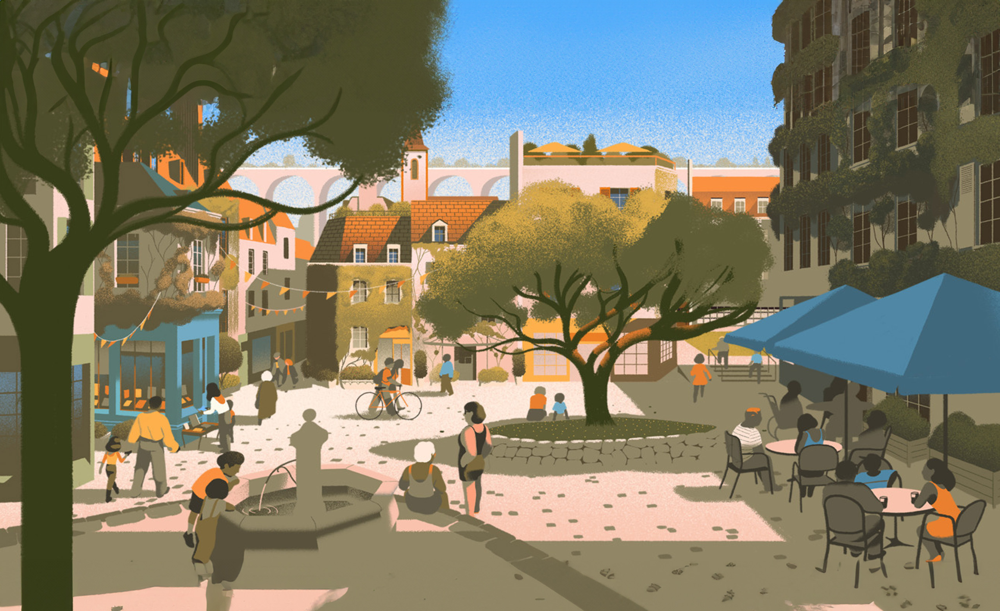
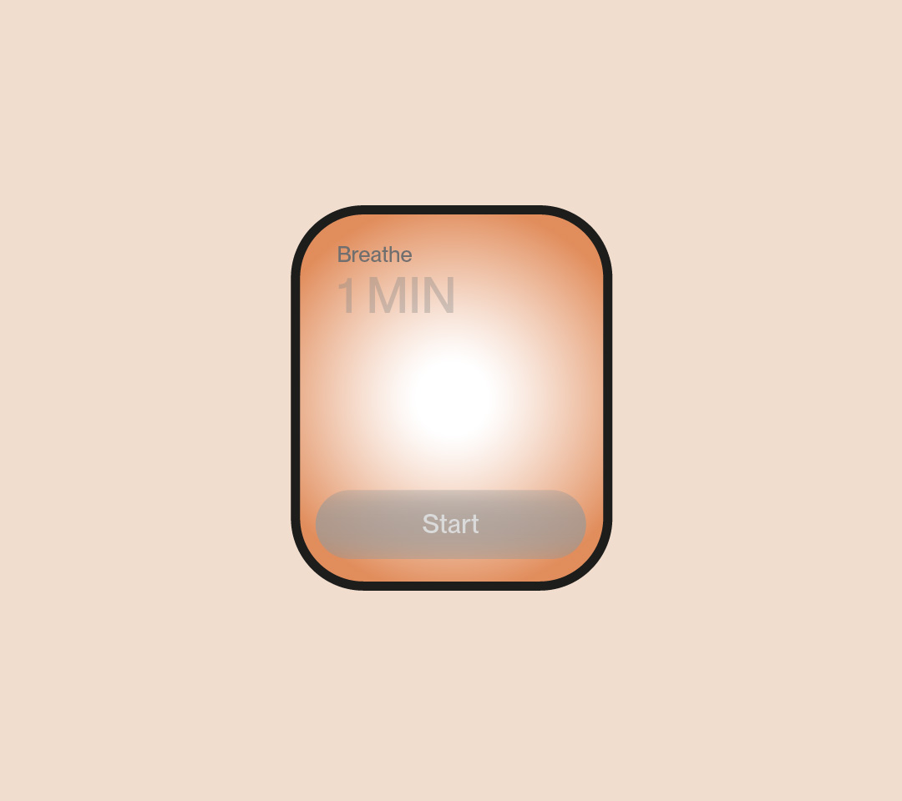

← Back
Urban stress and mental health: risks and strategies
Living in urban environments increases the risk of psychiatric disorders such as major depression
and schizophrenia, despite better infrastructure and healthcare in cities compared to rural areas.
Social stress from crowded living conditions and social inequalities seems to be a major factor.
Recent analysis shows that city residents have a 20% higher risk of anxiety disorders and a 40%
higher risk of mood disorders, with a doubled risk for schizophrenia.
As urbanization progresses, it is crucial to understand both the risk and protective factors for
mental health in urban environments. Individual differences in stress vulnerability make identifying
protective factors essential for developing public health strategies. Urban stress affects people differently
depending on their age, with childhood stress differing from adult stress, and health could be compromised
as more people move to cities for opportunities. Reducing social stress related to population density and
inequalities can lower the risk of mental health issues. In megacities of developing countries, extreme poverty
and inequalities add more stress.

Enhancing social interaction and well-being
Cities should create spaces that encourage social interaction, such as cultural facilities and
institutions, while also improving housing quality to reduce street noise. A city benefits us when
it inspires participation and maintains a balance between stimulation and relaxation. Ideally,
neighborhoods should offer both calm areas and vibrant spots like cafés or shopping streets,
ensuring that the city meets its residents' needs and allows for personal fulfillment.
“There’s no such thing as the ideal city.
A city does us good if it animates
us
to participate”
Reimagining Digital Interaction
This speculative interface represents a bold step towards redefining how we interact with technology.
By combining AI capabilities with neuro-urbanism principles, the proposed interface aims to create
a more cohesive and supportive digital experience. It envisions a future where technology not only
serves functional needs but also contributes to a more harmonious and enriching environment,
aligning with both individual well-being and broader urban contexts.

Breathing exercises for stress relief in crowded areas
When you find yourself in a crowded area, the app offers breathing exercises to reduce stress.
Using geolocation and density data, it detects congested areas and sends you a notification.
It suggests guided exercises with visual and audio instructions and a timer to facilitate practice.
After the exercise, you can evaluate your stress level and receive personalized recommendations.
The app also tracks your history and analyzes trends to enhance your well-being in crowded situations.

Daily urban environment summary for enhanced well-being
At the beginning of each day, the app sends you a notification called "Urban Priority Notification," which
provides a comprehensive summary of urban environment factors that may affect your well-being.
This notification includes information on temperature, air quality, external noise levels, traffic conditions,
and wind intensity. With this data, it helps minimize surprises and setbacks, allowing users to better manage
their expectations and reduce anxiety related to commuting and adverse environmental conditions.